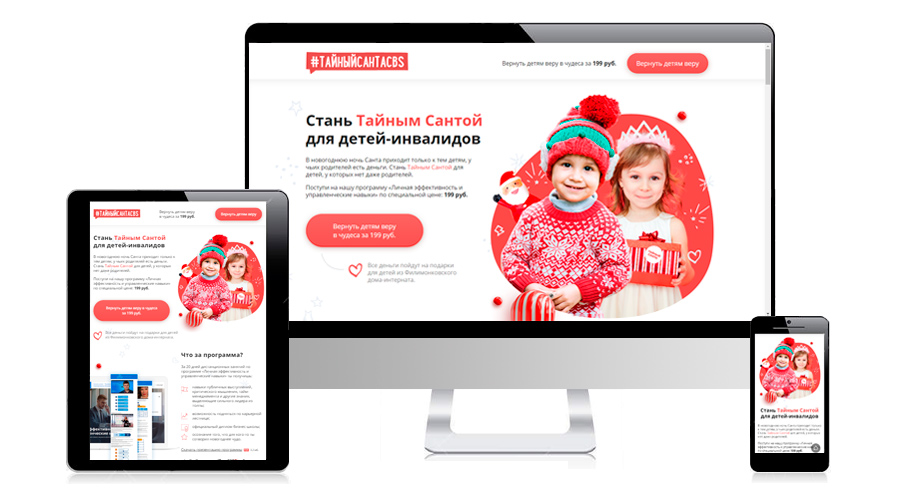
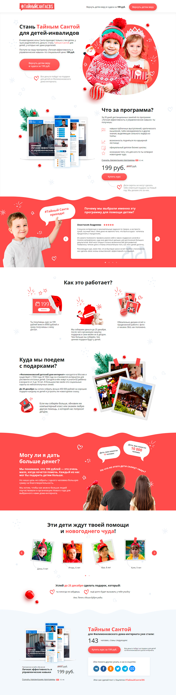
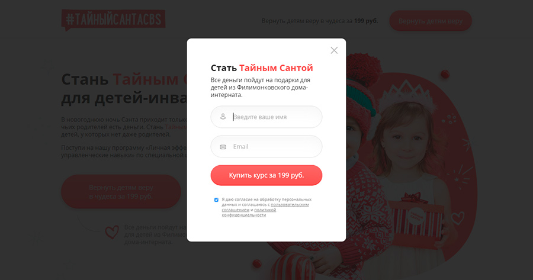

Верстка лендинга Тайный Санта
«Стань Тайным Сантой для детей-инвалидов» – лендинг с адаптивным дизайном.
Верстка осуществлялась с использованием шаблонизаторов Pug и SASS. Была применена сетка Bootstrap (reboot + grid). Сборка проекта выполнялась с помощью бандлера Webpack.
Что есть на сайте:
- Слайдеры (Slick).
- Pop-up окна (Fancybox) с формой.
- Текст полукругом на CSS и SVG (фраза: На что из этого дети скажут «вау»?).
Ссылки
Репозиторий: secret-santa-landing-page
Страница проекта: Secret Santa
Скриншоты


